案例 1 · 生图插入
圈空白，加一个小 logo
操作：在社交媒体卡片右侧圈一块空白，输入「加一个小 logo」，判断后选择插入/生成。
说明：空白不当成旁边的图标。生成结果贴合古腾堡书籍气质，并落在圈定位置。
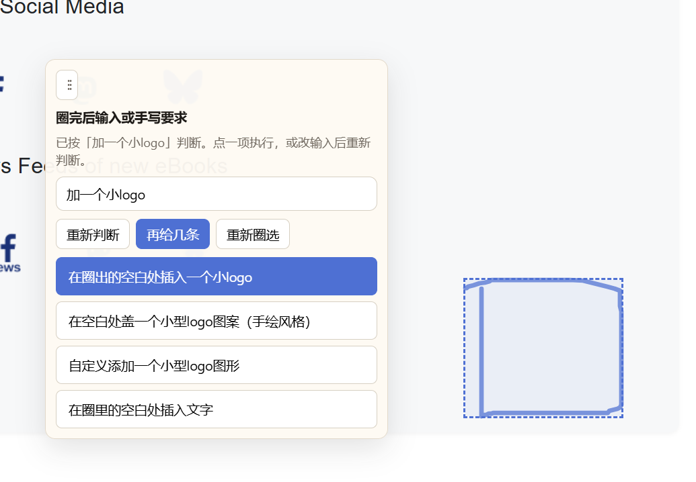
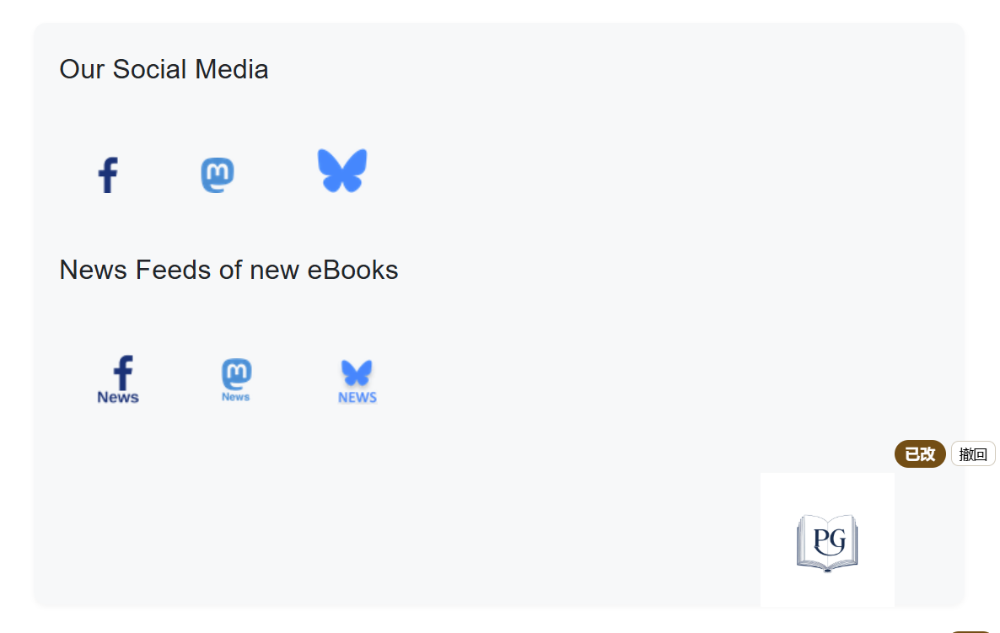
圈的是空位、没有完整选中已有模块。系统先判断，再让用户选择：AI 生成、自己写、或从本地插入。
案例 1 · 生图插入
操作：在社交媒体卡片右侧圈一块空白，输入「加一个小 logo」，判断后选择插入/生成。
说明：空白不当成旁边的图标。生成结果贴合古腾堡书籍气质，并落在圈定位置。


案例 2 · 生文插入
操作：在有声书介绍下方圈一条空白，输入「插入一段总结的话」，开始判断后执行。
说明：模型结合周围页面写文案，而不是把指令原样贴上去。
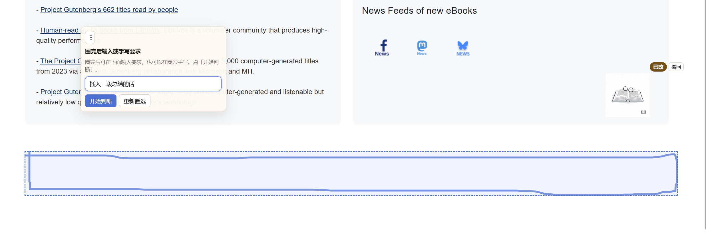
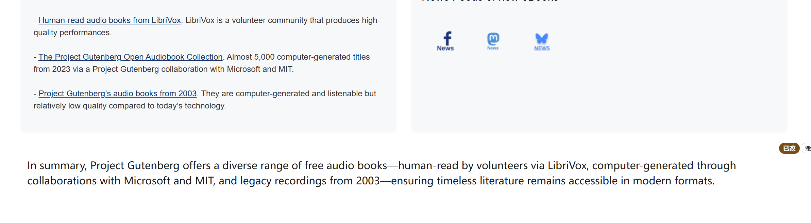
案例 3 · 已有图替换
操作：圈中深色书封，输入「换成浅色封面」，选择生成新图换上。
说明：不是整页换图，只改圈中这一本；标题仍对应该书。
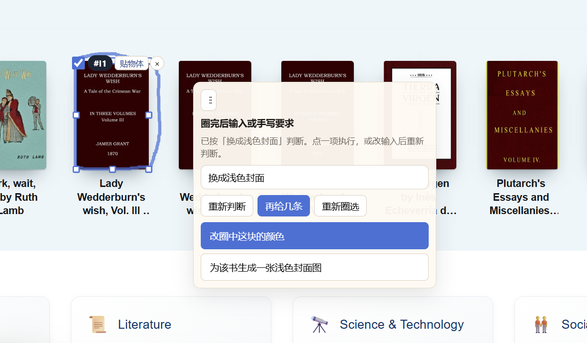
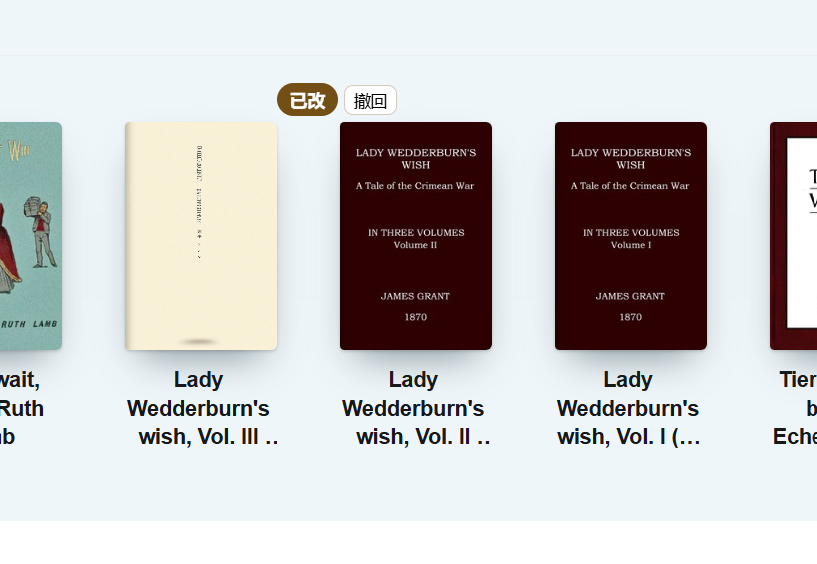
圈中已有文字或几处文字。按语义改这一处，或给几处套同一套颜色风格。
案例 4 · 扩写
操作：圈首页介绍段，输入「扩写这段话达到 200 词」，选择「扩写圈中文字」。
说明：只改圈中这段，标题和下面 New Releases 不动。
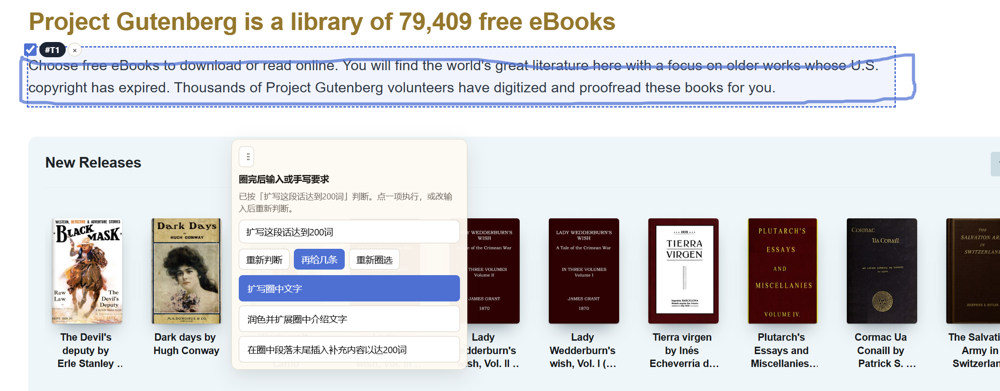
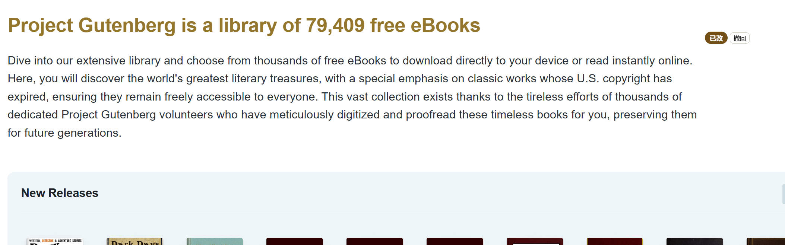
案例 5 · 改颜色
操作：圈主标题，输入「换个色调」，执行改色。
说明：只改圈中标题颜色，正文保持原样。
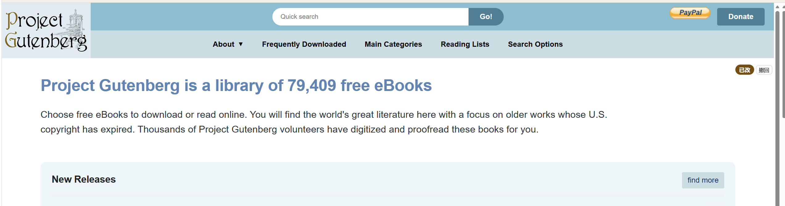
案例 6 · 一套风格
操作：同时圈标题和介绍段，输入「换一种颜色风格」，选择「给圈中几处套一套颜色风格」，再点色板（如北欧）。
说明：多处一起改时给的是配色方案，而不是只改一个色值。每处旁侧仍可单独撤回。
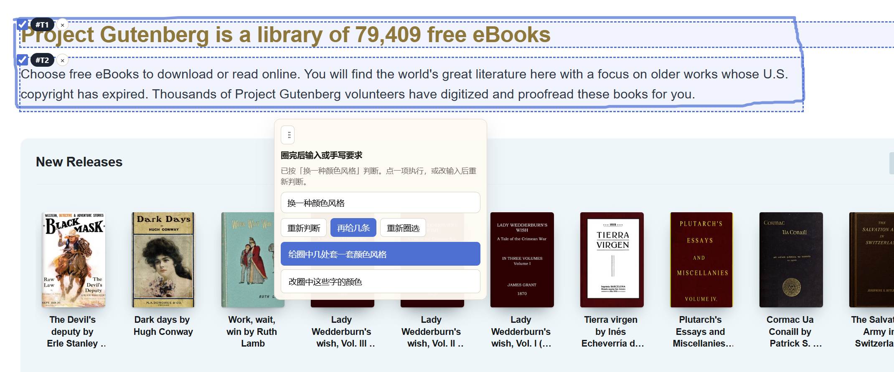
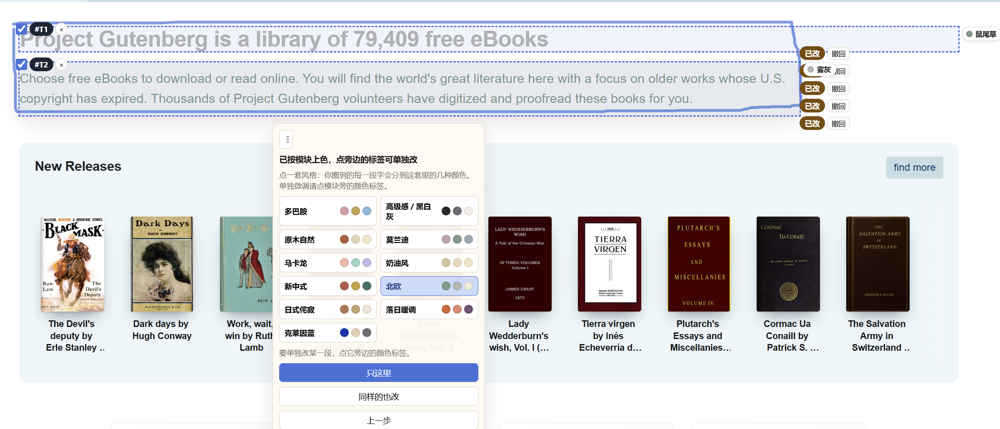
放大、挪模块、删除。圈偏一点时，按圈得更完整的那一块改，避免误改旁边的「find more」等。
案例 7 · 缩放
操作：圈左侧标题，输入「放大一点」。右侧 find more 虽可能擦到边，但不作为主目标。
说明：只放大圈中标题，书封行和 find more 不变。
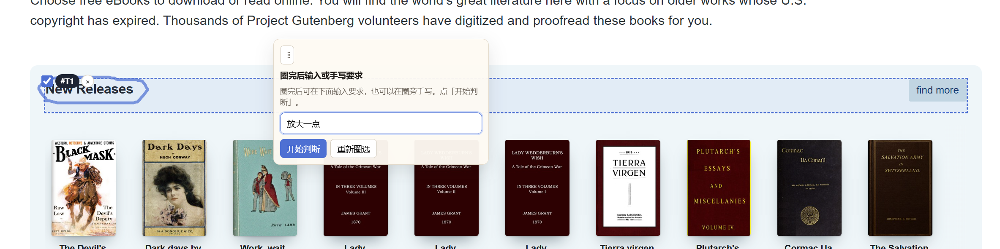
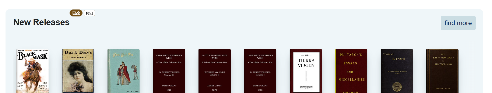
案例 8 · 移动布局
操作：一圈 Education 卡片，一圈左侧空白，输入「移动到指定位置」，点「移到画出的位置」。
说明：后一圈空白当落点，不当成新选区。移动后卡片离开原网格，周围回流。
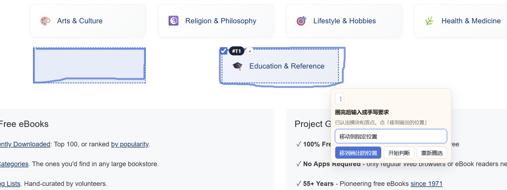
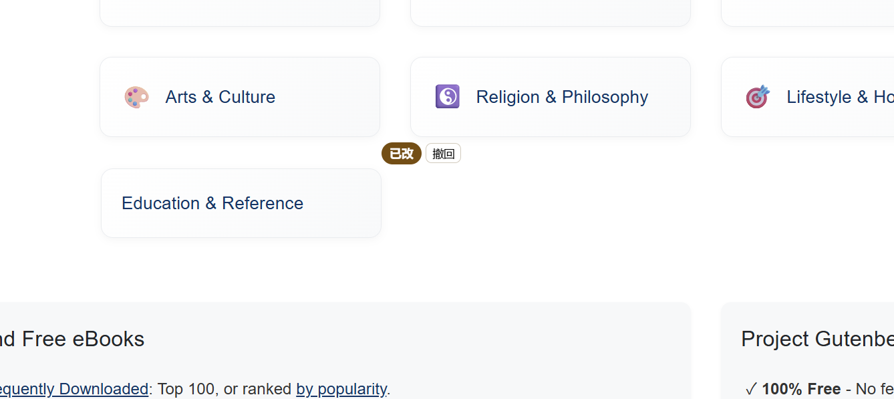
案例 9 · 删除
操作：圈中整张 Education & Reference，输入「删除」。
说明：去掉这一模块，其余分类卡重新排，不误删旁边卡片。
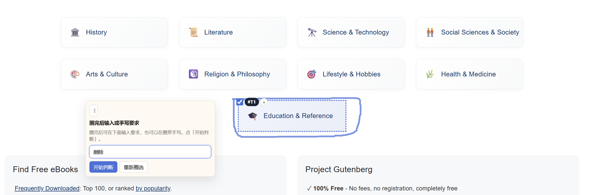
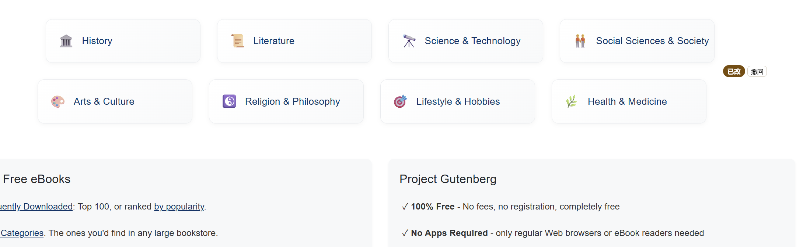
圈整张卡片再写「加阴影」→ CSS 投影。圈模块外围、并画出形状 → 按笔迹生成异形阴影。同类卡片可以一键套用。
案例 10 · 模块阴影
操作：圈中 Arts & Culture 整卡，输入「加上阴影」。
说明：目标是模块本身，用卡片 drop-shadow，不是在旁边空白里插一块黑影。
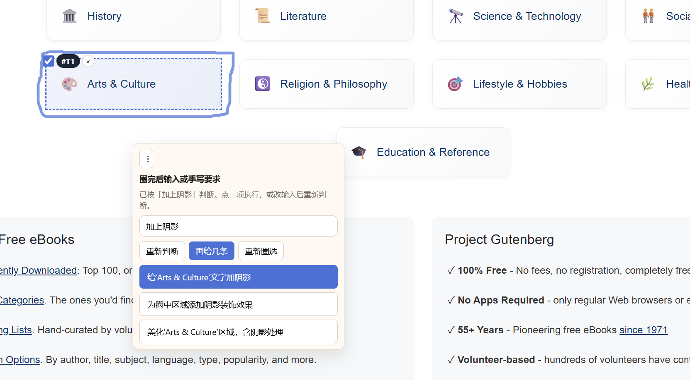
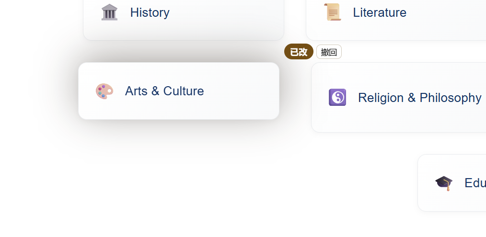
案例 11 · 同类套用
操作：给一处加完阴影后，选择「同类模块也加上」。
说明：同样大小和结构的分类卡一起加上同类型阴影，不必一张张圈。
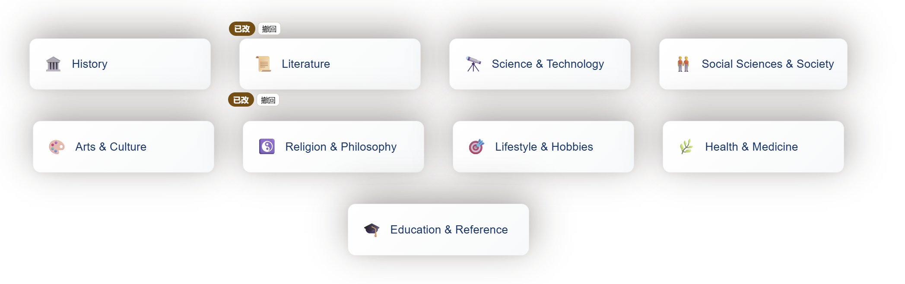
案例 12 · 手绘异形阴影
操作：不圈整张卡，而在 Education 卡片下方画出一块梯形区域，输入「添加这个形状的阴影」。
说明：圈的是模块周边而不是模块本身，所以按笔迹形状生成阴影，而不是给卡片套 CSS 投影。
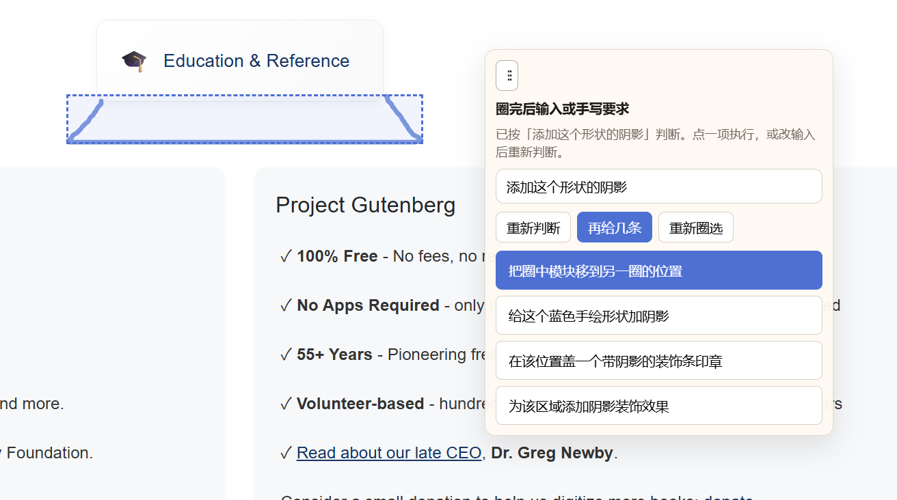
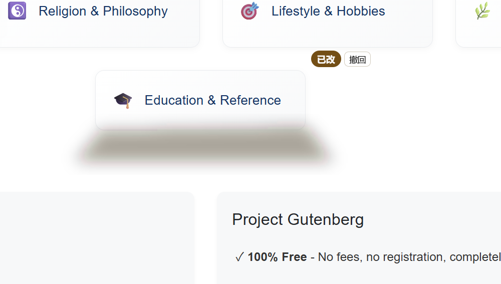